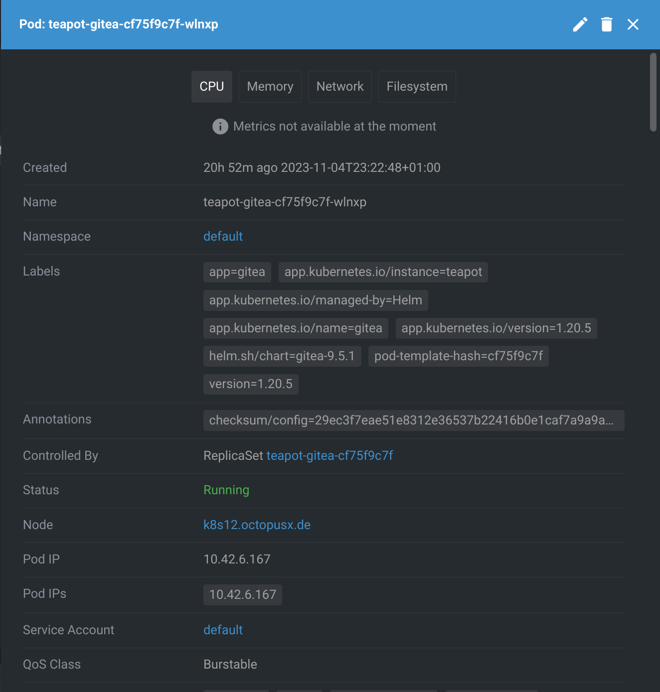
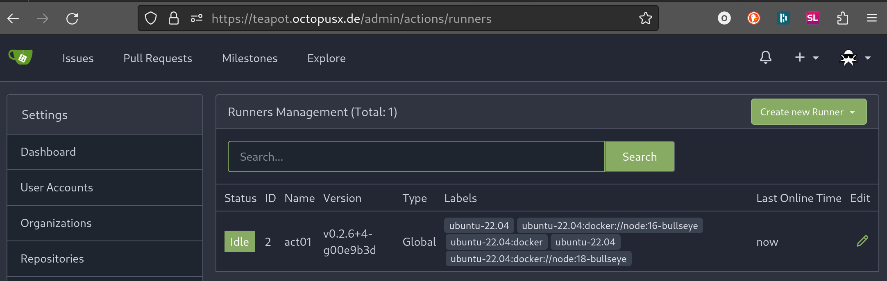
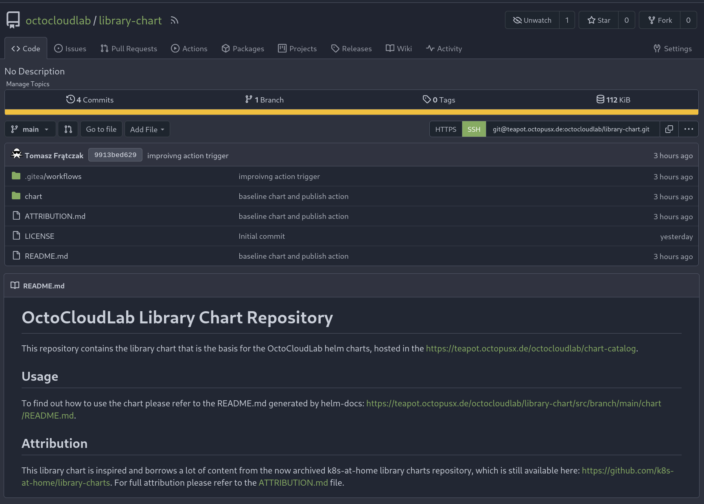

11 minutes
Teapot - host your own helm chart registry
For a while I wanted to host my own helm chart registry and automate my chart build, release and deployment processes. As a homelaber, a one man band, the more things happen on their own without my manual involvement the better. Self hosting to me also means self reliance and local storage for most things needed in order to build and run my services, and getting my own registry is getting one step closer to that goal.
When I first started my homelab journey and decided to go the kubernetes route, the k8s-at-home project was not only a source of quality helm charts for me to deploy but also an inspiration for how to write reusable charts and manage my own helm chart repositories. Sadly the project has been archived since then as the main maintainer had struggled to keep up with the updates without sufficient help from the community. At the time I either didn’t have the time or the skills to support the project. Today, a few years later, I feel like I may finally have what it takes to bring back at least a small part of the project alive, starting from their library chart. In this blog post I will walk you through how I’ve set up a public Gitea instance to be used as a helm chart registry and git repository for myself and anyone else who wishes to use the charts.
Before we go further, a quick disclaimer that, for all intents and purposes, https://truecharts.org/ has taken the place that k8s-at-home used to have. It is a fantastic resource for helm charts not just to use with TrueNas Scale but on any homelab k8s cluster. I highly recommend checking it out. That is not however what this blog is about, we’re going to explore the fun but also the complex side of self hosting. So let’s crack on!
Primary Objective
I am still running a lot of helm charts from the k8s-at-home public repository (https://github.com/k8s-at-home/charts) and all of them are built based on their library chart (https://github.com/k8s-at-home/library-charts). Now, so far this hasn’t been a problem as K8S releases haven’t deprecated many APIs lately, but it is only a matter of time before a change will break compatibility with the library chart. As the project is no longer in development, we will host the library chart ourselves and build a simple pipeline to publish it to our own registry. This way we will be able to update the base library chart when needed and port the k8s-at-home charts on our new updated version.
For this we will:
- Deploy a dedicated instance of Gitea, and call it Teapot!
- Deploy Gitea runners and connect them to the Gitea instance.
- Clone and sanitize the library chart, then host it in our new Gitea instance.
- Write a Gitea action to build and release the library chart.
- Build and push the library chart to Gitea’s built in registry.
Gitea Deployment
We will be deploying Gitea on our usual K8S cluster, as always. We will use the official Gitea helm chart as a base. Their chart is very robust and highly customizable. All we need to do is import it into our deployment chart and run helm install on it.
Chart.yaml:
apiVersion: v2
name: teapot
description: A public instance of Gitea, notably a Teapot.
type: application
version: 0.1.0
appVersion: "1.20.5"
maintainers:
- name: Tomasz Fratczak
email: sre@octopusx.de
dependencies:
- name: gitea
version: 9.5.1
repository: https://dl.gitea.io/charts/
Here is my values file. I disabled all of the unnecessary bells and whistles, configured ingress as well as the SSH load balancer service (for SSH traffic ingress), storage, disabled built in databases and pointed it at my existing postgres instance.
values.yaml:
gitea:
image:
repository: gitea/gitea
tag: 1.20.5
ingress:
enabled: true
annotations:
kubernetes.io/ingress.class: traefik-210-external ## Class of dedicated Traefik ingress controller for external connectivity
traefik.ingress.kubernetes.io/router.entrypoints: websecure,web
traefik.ingress.kubernetes.io/router.middlewares: default-redirect-https@kubernetescrd
hosts:
- host: teapot.octopusx.de
paths:
- path: /
pathType: Prefix
tls:
- secretName: <tls-secret-name>
hosts:
- teapot.octopusx.de
service:
ssh:
type: LoadBalancer
persistence:
enabled: true
size: 30Gi
accessModes:
- ReadWriteOnce
redis-cluster:
enabled: false
postgresql-ha:
enabled: false
gitea:
config:
actions:
ENABLED: true
server:
START_SSH_SERVER: true
ROOT_URL: https://teapot.octopusx.de
service:
DISABLE_REGISTRATION: true
cache:
ENABLED: false
session:
PROVIDER: db
database:
DB_TYPE: postgres
HOST: <postgres-url>:<postgres-port>
NAME: teapot
USER: teapot
PASSWD: "<PASSWORD>"
SCHEMA: ""
For the database connection to be established I had pre-created a teapot database and user in my postges instance, like so:
CREATE USER teapot
LOGIN
ENCRYPTED PASSWORD '<password>';
CREATE DATABASE teapot
ENCODING 'UTF8'
LC_COLLATE='C'
LC_CTYPE='C'
template=template0
OWNER teapot;
Armed with the database credentials, we can now deploy the chart:
helm install teapot . --set gitea.gitea.postgresql.password=<PASSWORD> --set gitea.gitea.admin.password=<PASSWORD>
With the following result: 
We can now log into our new instance, in my case under https://teapot.octopusx.de, as gitea_admin with the password we just set and start messing around.
Gitea Runner
Now that we have our Gitea instance up and running, we need to create a runner to be able to deploy the library chart.
The Gitea act runner is easiest deployed as a container. I won’t get into too much detail on how you can confiture it as Gitea’s documentation is very detailed already: https://docs.gitea.com/next/usage/actions/act-runner. What I will point to in addition though is the examples folder in the gitea act runner repo, to be found here: https://gitea.com/gitea/act_runner/src/branch/main/examples. Having read this I have realised that it basically needs to orchestrate a docker daemon, docker-in-docker style. This is generally not a good idea inside of a Kubernetes cluster, for practical as well as security reasons. I have therefore opted to run this workload in its own LXC container on one of my proxmox servers instead. I installed docker inside of the of my LXC and ran the following command:
docker run \
-v $PWD/config.yaml:/config.yaml \
-v $PWD/data:/data \
-v /var/run/docker.sock:/var/run/docker.sock \
-e CONFIG_FILE=/config.yaml \
-e GITEA_INSTANCE_URL=https://teapot.octopusx.de:443 \
-e GITEA_RUNNER_REGISTRATION_TOKEN=<get your own token lol> \
-e GITEA_RUNNER_NAME=act01 \
-e GITEA_RUNNER_LABELS="ubuntu-22.04:docker://node:18-bullseye" \
--name act_runner \
-d gitea/act_runner:nightly
If you’re wandering how to get the registration token from your Gitea server, I recommend reading the quick start guide: https://docs.gitea.com/next/usage/actions/quickstart.
And here we go, a newly registered runner, fresh out of the LXC and still warm: 
Library Chart Repository
I don’t think I need to tell you how to create a new repository in Gitea do I? To make scoping and access rights management easier in the future I created an organization first, called it octocloudlab. It is hard to find good names that aren’t already copy righted, so I thought this one is just nonsense enough to get the job done. I then created a new repository called library-chart under this new organization. I did not want to just create a fork of k8s-at-home library-charts repository, as that was indeed a complex project that would be somewhat hard for one person to wrap their head around. The original repository was shared under the Apache 2.0 license, so I started by creating a README.md with the appropriate attributions to the original project contributors (which you can find here). Then I tool just the stable common chart from here: https://github.com/k8s-at-home/library-charts/tree/main/charts/stable/common to use as the blueprint for my release. BTW, this is the first time I am basing a project on someone else’s work, if you think I could have done anything better when it comes to attribution or other license-related issues, please let me know on the socials.
Before I committed it to my new repository I made sure to update all of the metadata, removing any references to the original contributors and documentation from the code itself, in order to make sure there are no misunderstandings as to who the maintainer of this repository is and where one should go to seek help if necessary.
To update all of the auto-generated Helm documentation I then ran:
helm-docs generate -t README_CHANGELOG.md.gotpl -t README_CONFIG.md.gotpl -t README.md.gotpl
from inside the chart folder, which produced the updated README.md.
The final result is a clean and simple, publicly available repository with just the necessary basics to allow me to maintain and update the common library chart for my own benefits.

Should you wish to explore it, feel free to visit https://teapot.octopusx.de/octocloudlab/library-chart/.
Gitea Action
Gitea’s actions system is drop-in compatible with Github actions. Even better, by default they use the Github actions repository and you can use use the same workflows and ready-made actions that you normally see on Github. For me this is a fantastic opportunity to try out and learn Github actions, which my company uses at work but I had no opportunity to play with. So, the first thing I decided to do is run a test demo workflow to make sure that my runners are operating correctly. I found this demo example on Gitea’s blog here https://blog.gitea.com/feature-preview-gitea-actions/:
name: Gitea Actions Demo
run-name: ${{ github.actor }} is testing out Gitea Actions 🚀
on: [push]
jobs:
Explore-Gitea-Actions:
runs-on: ubuntu-latest
steps:
- run: echo "🎉 The job was automatically triggered by a ${{ github.event_name }} event."
- run: echo "🐧 This job is now running on a ${{ runner.os }} server hosted by Gitea!"
- run: echo "🔎 The name of your branch is ${{ github.ref }} and your repository is ${{ github.repository }}."
- name: Check out repository code
uses: actions/checkout@v3
- run: echo "💡 The ${{ github.repository }} repository has been cloned to the runner."
- run: echo "🖥️ The workflow is now ready to test your code on the runner."
- name: List files in the repository
run: |
ls ${{ github.workspace }}
- run: echo "🍏 This job's status is ${{ job.status }}."
I added this to .gitea/workflows/demo.yaml in my library-chart repo and… nothing. The action was waiting forever. This is the point where I have learned that actions and act runners need to have matching labels. In this case, the
runs-on: ubuntu-latest
has to match the label ubuntu-22.04:docker://node:18-bullseye on my action runner in order for it to pick up the action. The interesting and unusual thing about this system is that this label (or tag) not only identifies the runner but also provides the specification of what the runner is capable of. In this case:
ubuntu-22.04 : docker : // node:18-bullseye
Runner OS : runner type : docker image used
So, once we fixed that and labeled the job and the runner correctly, it triggered on the next push and executed no problem. Let’s move onto the actual workflow that we want to build though. The strength of the actions model is that they are reusable and you can find a multitude of pre-configured workflows to use in your own pipelines straight on Github’s “marketplace”: https://github.com/marketplace?type=actions. What I tried to do was:
- check out the project
- package up the helm chart
- push the new package to the gitea registry
To check out the repo we can use the same action as the demo action, i.e. actions/checkout@v4. I then tried using plain run commands that allow you to execute arbitrary bash code, but my action was slowly becoming pretty complex. This is because I would have to:
- install helm
- install helm plugin cm-push
- add my gitea registry as helm repository
- package the chart
- publish the package to the helm repository
I started searching for a ready made Github action, thinking that someone must have needed this functionality at some point, and yeah, I found one pretty quickly. The bsord/helm-push@v4.1.0 does all of the above in a single step with minimal configuration needed. It had some problems itself, as for some reason all of the documentation for it was listing a non-existent 4.2.0 tag, and without the v, so it took me a while to figure out why the heck it’s failing. Finally though, I made it:
name: Gitea Actions Demo
run-name: ${{ gitea.actor }} is testing out Gitea Actions 🚀
on:
workflow_dispatch:
push:
branches:
- main
paths:
- 'chart/**'
jobs:
Explore-Gitea-Actions:
runs-on: ubuntu-22.04:docker://node:18-bullseye
steps:
- name: Check out repository code
uses: actions/checkout@v4
- name: Push Helm Chart to Gitea Registry
uses: bsord/helm-push@v4.1.0
with:
username: ${{ secrets.USERNAME }}
password: ${{ secrets.PUBLIC_PACKAGE_WRITE }}
registry-url: 'https://teapot.octopusx.de/api/packages/octocloudlab/helm'
force: true
chart-folder: chart
This is basically all I needed to get this basic workflow running. Now, this workflow will be triggered each time a change to the chart folder in the main branch is made. In order to be able to download and use this library chart you can now do the following:
helm repo add octocloudlab https://teapot.octopusx.de/api/packages/octocloudlab/helm
helm repo update
And to include it in your helm chart add the following to your dependencies section in the Chart.yaml
## Chart.yaml
dependencies:
- name: common
version: 4.5.2
repository: https://teapot.octopusx.de/api/packages/octocloudlab/helm
What now?
Now that I have this library chart published and a way to modify it and publish patches reliably, I will slowly replace the current helm chart that I am using in my infrastructure with a version of them that is based on this library chart. Since at this point I haven’t made any changes to the k8s-at-home library chart this should be a drop in replacement. Then, going forward, I will start adapting the library chart to my needs, adding capabilities that I am missing in my homelab and trying to patch it for newer versions of kubernetes API.
The first victim on the chopping block however will be the chart I pieced together to deploy refact.ai, about which you can read in my previous blog entry. As far as I know there is no official helm chart for that project, so it will be interesting to publish a nice clean helm chart for them and see if anyone, besides me, actually ends up using it.
2252 Words
2023-11-05 22:24